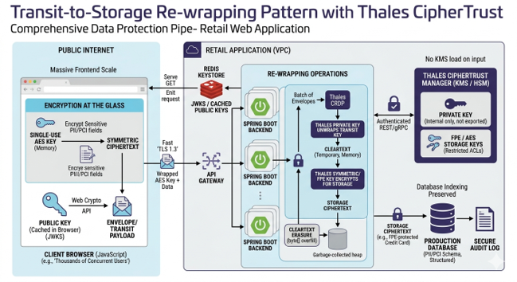

Thales Client-Side End-to-End Protection
This technical overview explains how the prototype protects sensitive fields in the browser, transports an encrypted payload to Spring Boot, unwraps the one-time AES key through Thales CipherTrust Manager, and then applies CRDP protection for downstream use.

Current Prototype Components
| Component | Role | Project Location |
|---|---|---|
| React frontend | Captures user input, requests the public key, encrypts sensitive fields, wraps the AES key, and submits the protected payload. | frontend/src |
| Web Crypto API | Generates the one-time AES key, encrypts fields with AES-GCM, and wraps the AES key using RSA-OAEP. | frontend/src/crypto.ts |
| Spring Boot backend | Exposes public-key, secure-submit, and backend-processing endpoints. | backend/src/main/java |
| CipherTrust REST path | Exports public key material and unwraps the AES key through CipherTrust REST APIs. | CipherTrustRestService.java |
| CADP path | Uses CADP for Java to export public key material and perform private-key unwrap operations. | CadpBrowserKeyProvider.java, CadpAesKeyUnwrapProvider.java |
| CRDP backend process | Applies policy-based protection and reveal operations to the reconstructed payload. | ThalesCrdpService.java |
End-to-End Flow
- Public key retrieval. The browser calls
GET /api/crypto/public-key. The backend obtains public-key material from the selected path: REST, CADP, or mock mode. - Client key generation. The browser generates a one-time AES key for the submission using Web Crypto.
- Field encryption. Sensitive fields are encrypted with AES-GCM. Each encrypted field carries its own ciphertext and IV.
- AES key wrapping. The browser exports the AES key bytes and wraps them with the Thales-managed RSA public key using RSA-OAEP.
- Wire submission. The browser posts the non-sensitive fields, encrypted sensitive fields, IV values, key metadata, crypto mode, and wrapped AES key to
POST /api/secure/submit. - Trusted unwrap. The backend unwraps the AES key through CipherTrust REST or CADP. Private-key operations stay on the backend and in Thales-managed infrastructure.
- Transient field decrypt. The backend decrypts sensitive fields in memory to reconstruct the trusted processing payload.
- Policy protection. The downstream processing step calls CRDP
protectbulkto convert values into durable protected data. - Controlled reveal. When authorized, CRDP
revealbulkcan recover original values using policy, identity, and audit controls.
Wire Payload Shape
The current prototype uses one AES key per submission and a different IV per sensitive field. The IV is not secret and must travel with each ciphertext so the backend can decrypt correctly after it recovers the AES key.
{
"requestId": "3dc8bc31-232a-4a05-8cc3-f5128fda3a92",
"keyId": "rsakey1",
"keyVersion": 0,
"cryptoMode": "REST",
"nonSensitive": {
"userid": "bob",
"favoriteColor": "Blue",
"comments": "Hi"
},
"sensitive": {
"name": {
"ciphertext": "...",
"iv": "..."
},
"address": {
"ciphertext": "...",
"iv": "..."
},
"creditCardNumber": {
"ciphertext": "...",
"iv": "..."
}
},
"wrappedAesKey": "..."
}Cryptographic Model
REST vs CADP Private-Key Path
| Path | When It Helps | Operational Notes |
|---|---|---|
REST |
Useful when the application can reach CipherTrust Manager over HTTPS but cannot use CADP or NAE connectivity. | Simple deployment model. Remote REST private-key operations are generally slower than locally cached CADP operations and require JWT token lifecycle handling. |
CADP |
Useful when the CADP SDK and required ports/connectivity are available and higher private-key processing performance is desired. | Can support key and cipher caching depending on CADP configuration. Requires CADP library setup and operational familiarity. |
Production Public-Key Caching Pattern
Public keys are not secret, but they are still operationally important because they carry key identity, version, algorithm, and rotation semantics. A production deployment can place Redis or another low-latency cache behind the backend public-key endpoint.
- The backend periodically fetches public-key metadata from CipherTrust Manager.
- Redis stores public-key PEM, key name or ID, key version, algorithm, and expiry metadata.
- Browsers call the application backend, not CipherTrust Manager, to retrieve the current public key.
- Cache expiry and refresh policy should align with key rotation and incident-response requirements.
- The backend should allow active key rollover so old submissions can still be unwrapped while new submissions use the latest public key.
Backend Endpoints Used By The Demo
| Endpoint | Purpose |
|---|---|
GET /api/crypto/public-key |
Returns key ID, key version, algorithm, crypto mode, and PEM public key for browser encryption. |
POST /api/secure/submit |
Accepts the protected browser payload, unwraps the AES key, decrypts sensitive fields, and reconstructs the trusted processing payload. |
GET /api/process/latest |
Returns the latest submission and backend processing state for the demo UI. |
POST /api/process/policy-protect |
Applies CRDP protectbulk to sensitive fields for downstream storage or processing. |
POST /api/process/reveal |
Applies CRDP revealbulk to show controlled recovery of protected values. |
Security Boundaries
| Boundary | Protected By | Important Production Controls |
|---|---|---|
| Client capture | Web Crypto AES-GCM field encryption and RSA-OAEP key wrap. | Content Security Policy, dependency control, XSS prevention, secure iframe-based inputs for high-risk fields, and browser hardening. |
| Browser to backend | Application-layer encrypted payload plus HTTPS transport. | Enable TLS on Spring Boot or the fronting gateway, validate certificates, enforce HSTS, and restrict CORS. |
| Backend unwrap | CipherTrust REST or CADP private-key operation. | Backend-only credentials, short-lived tokens, secure secret storage, audit, and no cleartext logging. |
| Backend to CRDP | CRDP policy-based protect/reveal calls. | Policy governance, identity mapping, TLS validation, service-account controls, and audit monitoring. |
| Durable storage | CRDP-protected values, including FPE or policy-selected formats where appropriate. | Schema review, searchable/indexed field strategy, access control, backup protection, and reveal authorization. |
Operational Considerations
- Token lifecycle: REST integrations should cache CipherTrust JWTs and refresh before expiry, with retry-on-unauthorized logic for long-running jobs.
- Key versioning: The browser should echo the key version returned by the public-key endpoint so the backend can decrypt with the matching key version.
- Logging: Avoid logging plaintext, AES key material, wrapped key material, raw ciphertext, or CRDP reveal results outside controlled troubleshooting windows.
- Performance: CADP with caching may outperform REST for high-volume private-key operations. REST remains useful when HTTPS is the only available path.
- Failure handling: Treat unwrap, decrypt, and CRDP protect failures as controlled rejects. Preserve request IDs for audit and support without exposing sensitive values.
- Memory hygiene: Keep cleartext lifetime short and avoid unnecessary object copies where practical. Java and browser runtimes cannot provide perfect memory erasure guarantees, so architecture should minimize exposure.
Prototype vs Production
| Area | Prototype | Production Direction |
|---|---|---|
| TLS | May use trusted-mode or relaxed certificate validation for lab testing. | Use real certificates, hostname validation, TLS 1.3 where supported, and hardened gateway configuration. |
| Secrets | Credentials may be configured in local YAML for demonstration. | Use a secret manager, environment-based injection, rotation, and least-privilege service accounts. |
| Public-key scale | Backend retrieves public-key metadata for the demo flow. | Add Redis or equivalent public-key cache if the application serves high browser traffic. |
| Client hardening | Standard React input fields demonstrate the crypto pattern. | For high-risk fields, consider isolated iframe capture, strict CSP, script integrity controls, and stronger anti-tamper monitoring. |
| Data durability | Demo state is held in memory. | Persist only CRDP-protected values and avoid durable plaintext in logs, queues, databases, and object stores. |
Recommended Implementation Roadmap
- Confirm sensitive field inventory, regulatory scope, and which values require FPE, tokenization, or irreversible protection.
- Define the key hierarchy: client wrapping keys, rotation model, key versions, CRDP policies, and reveal authorization.
- Harden the browser application: CSP, dependency governance, XSS controls, and secure input strategy for highest-risk fields.
- Harden Spring Boot transport: HTTPS, certificate validation, CORS, authentication, request limits, and structured error handling.
- Add production public-key caching if user concurrency requires it.
- Choose REST or CADP based on connectivity, performance, deployment model, and operational skill set.
- Instrument metrics for public-key lookup, unwrap latency, decrypt latency, CRDP protect latency, failures, and token refresh behavior.
- Run volume tests that match the target use case: end-user synchronous flows, backend batch flows, or Kafka-style consumer workloads.
Document location: backend/docs/thales-client-side-end-to-end-technical-overview.html. Diagram source: backend/docs/thales-end-to-end.png.